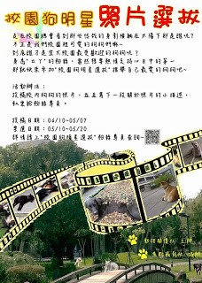
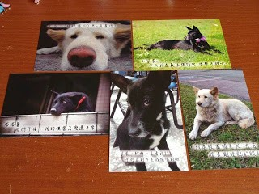

89th Anniversary Of National Ilan University
由動物關壞社主辦的「第二屆校園狗明星選拔 」正式在5月10日進行網路投票，投票期間至5月20日止。此次比賽主題為「流浪狗的小幸福」，參賽者為留犬拍照後即可在網路上進行投稿參加比賽。此比賽的目的是希望透過“流浪狗的小幸福”這個主題，讓大家在關注校內留犬的同時，也可以從活動中獲得正面的能量，藉此讓大家一起關心流浪犬們。
比賽海報
今年前三名的選拔賽獎品為投稿照片製成的客製化商品(馬克杯、筆記本和日曆等)。而投票者到現場投票後填寫回饋單，即可獲得書籤一枚，攤位亦有販賣明信片。攤位將於18日早上9時起開始設攤，地點為教穡110﹐，歡迎大家到現場投選心目中的狗明星!
狗狗明信片
詳細資料
相片投稿日期：
4月10日 至 5月7日
網路按讚投票：
5月10日 至 5月19日
現場投票(教穡１１０)：
5月18日→09:00 - 16:00
5月19日→09:00 - 16:00
5月20日→09:00 - 13:00
評分方式： 1.網路投票(20%)
→經由網路開放按讚，從投稿並由粉專PO出後即可開始計算按讚數，投稿者可以以分享連結方式讓親朋好友點進粉專並對作品按讚，會依據(該照按讚數/全部照片的總讚數)x100%進行分數計算。
2,評審投票(30%)
→將會邀請焦點攝影以及動懷社各推出三位同學作為評審，依以下條件進行審評：整體美觀30%；攝影技巧30%；符合參賽主題40%。 3.現場投票(50%) ↓↓詳情請至↓↓ https://www.facebook.com/pages/%E6%A0%A1%E5%9C%92%E7%8B%97%E6%98%8E%E6%98%9F%E9%81%B8%E6%8B%94/758652717513345

© 國立宜蘭大學課外活動組版權所有 參考設計 TEMPLATED